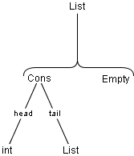

| toc | install | usage | language | examples | ref | api |
After generation the Java classes can store their values but the don't have any functionality. To add functionality we can simply add methods and variables, but two problems arise.
You see it would be great if we could separate the functionality from the generated classes. And this is exactly what the "visitor pattern" does. We explain the usage of this mighty design pattern with a example. We define a recursive data type list of int values. A list can be empty or contain a head (an int) and a tail (a list). classgen specification looks like this.
List::={Cons} "int":head
List:tail
| {Empty}
|  |
We generate classes with the "visitor" option. classgen creates 6 Java files List.java, Cons.java, Empty.java, SyntaxNode.java, Visitor.java and VisitorAdaptor.java. List, Cons, Empty look more or less like we know it from previous examples. The difference is that they all implement SyntaxNode (directly or indirectly) and they have some additionally methods. The most important method is accept(Visitor visitor). Its function will be described in the following examples.
The other 3 classes (or interfaces) have the following functions.
public interface Visitor {
public void visit(List list);
public void visit(Cons cons);
public void visit(Empty empty);
}
Confused? We'll give detailed explanation with this step by step example. The list data type can store a list of int values. Suppose we want to sum all the elements of a list. Because we do not want to alter the classes itself we use a visitor. Therefore we extend VisitorAdaptor.
public class ListSum extends VisitorAdaptor{
private int sum=0; //this int holds the current value
public int getSum(){ //get() method for the value
return sum;
}
public void visit (Cons c){ //visit() method is defined in Visitor.java
sum+=c.getHead(); //add the head of a list to the current value
c.getTail().accept(this); //"recursive" call to rest of the list
}
}
Before explanation we first show usage of this visitor.
public class Main{
public static void main(String args[]){
List l=new Cons(10, new //set up the example list
Cons(20, new Cons(30, new Empty()))); //"10, 20, 30"
ListSum ls=new ListSum(); //create our visitor
l.accept(ls); //let our visitor visit
//the list
System.out.println("Sum is: "+ls.getSum()); //print result
}
}
As we expected we get the result "60". What happened? We start the visitor with l.accept(ls). The accept() method is (abstractly) defined by List without a method body. So we take a look at the accept() method of Cons.
public void accept(Visitor visitor){
visitor.visit(this);
}
accept() only calls the visit() method of our visitor, which in turn adds the head value to its variable sum. After adding the value it calls accept(ourVisitor) for the rest of the list. Ok, but the at the end of our list is an instance of Empty. Our visitor only defines visit(Cons c). We take a look at the super class of our visitor, VisitorAdaptor and see it defines visit(Empty e). The method has a empty body and therefore does nothing. It adds nothing to our sum and does not call to a new method. The visiting stops at this point.
We added functionality to our classes without extending themselves. As you'll see in the next example it's easy to write another visitor which produces a string concatenation of all values of a list. This visitor has another addition, it has a explicitly defined method visit(Empty e) which produces a "E" to mark the end of the list.
public class ListConcat extends VisitorAdaptor{
private String concat=""; //the string holds the current value
public String getConcat(){ //get() method for the string
return concat;
}
public void visit (Cons c){ //visit() method is defined in Visitor.java
concat=concat+" "+ //add the head of a list to the current string
String.valueOf(c.getHead())+" ";
c.getTail().accept(this); //"recursive" call to rest of the list
}
public void visit (Empty e){ //visit() for empty list
concat=concat+" E "; //add a "E"
} //do not call further methods
}
We now use both visitors.
public class Main{
public static void main(String args[]){
List l=new Cons(10, new //set up the example list
Cons(20, new Cons(30, new Empty()))); //"10, 20, 30"
ListSum ls=new ListSum(); //create our sum-visitor
ListConcat lc =new ListConcat(); //create our concat-visitor
l.accept(ls); //let our visitors visit
l.accept(lc); //the list
System.out.println("Sum is: "+ls.getSum()); //print result
System.out.println("Concatenation is: "+
lc.getConcat());
}
}
We get the following result:
Sum is: 60 Concatenation is: 10 20 30 E
In some cases (e.g. the concatenation visitor) the order in which the nodes are visited is important. classgen generates methods to visit the nodes in "top-down" or "bottom-up" manner. To use this methods we have to do a small change to our visitor. We don't have to call other accept() methods. The methods traverseTopDown() and traverseBottomUp() do this for us.
public class ListConcat extends VisitorAdaptor{
private String concat=""; //the string holds the current value
public String getConcat(){ //get() method for the string
return concat;
}
public void visit (Cons c){ //visit() method is defined in Visitor.java
concat=concat+" "+ //add the head of a list to the current string
String.valueOf(c.getHead())+" "; //NO call to other accept() methods
}
public void visit (Empty e){ //visit() for empty list
concat=concat+" E "; //add a "E"
} //do not call further methods
}
You can see the difference between top-down and bottom-up traversing in the example.
public class Main{
public static void main(String args[])
{
List l=new Cons(10, new Cons(20, new Cons(30, new Empty())));
ListConcat lc= new ListConcat();
l.traverseTopDown(lc);
System.out.println("Concatenation 1 is: "+lc.getConcat());
lc = new ListConcat();
l.traverseBottomUp(lc);
System.out.println("Concatenation 2 is: "+lc.getConcat());
}
}
We have to create a new visitor for the second traverse since our visitor has no method to reset its variable which holds the result. Running the program produces:
Concatenation 1 is: 10 20 30 E Concatenation 2 is: E 30 20 10
These small examples should have shown the usage and might of the "visitor pattern". For further information refer to [1].
© copyright 2000, 2001, 2002 Sebastian Winter (winterse@in.tum.de) and Florian Deissenboeck (flo@deissenboeck.de)
© copyright 2000, 2001, 2002 Technical University of Munich, Germany